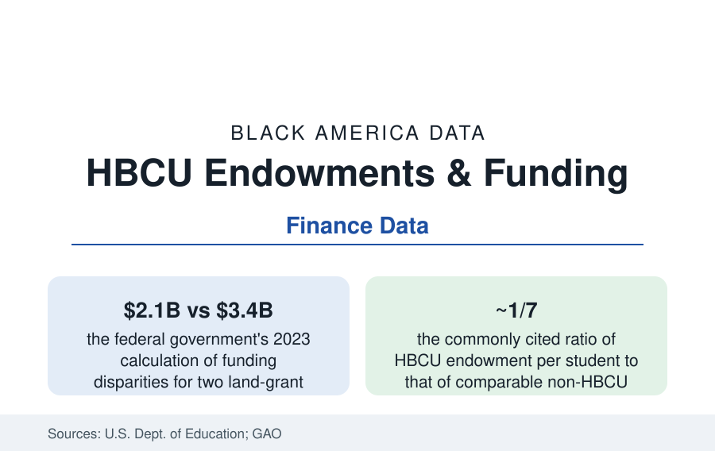

Black Education
HBCU Endowments: The Funding Gap, Compounded Annually
HBCUs educate a tenth of Black collegians on endowments averaging a fraction of their peers' — and state underfunding documented in the billions. The finance file.

Money compounds, and so does its absence: the finance data on historically Black colleges describe institutions educating roughly a tenth of Black undergraduates (and producing outsized shares of Black graduates, per the enrollment article) on endowments that average a fraction of their peers', in buildings the federal auditors found deteriorating for want of capital budgets, in states whose own land-grant ledgers shorted them — by the federal government's 2023 accounting — sums in the billions per state system. The 2020s brought a counter-shock of philanthropy and federal relief. This article reads the whole ledger: the structural gap, the documented debt owed, and what the recent money did and did not repair.
The Endowment Arithmetic
The IPEDS finance data give the gap its shape: the largest HBCU endowment (Howard's, in the range of a billion dollars in the recent filings) would rank it outside the top hundred nationally; the median HBCU endowment sits in the low tens of millions — against national medians several times higher — and the per-student comparisons (the ratio the sector's analyses cite at roughly one to seven against comparable institutions) convert the totals into the operating reality: endowment payout is the subsidy that funds the scholarships, the faculty chairs, the maintenance deferral's opposite — the things tuition cannot. The causes are the wealth data read institutionally: alumni giving capacity (the attainment and income files applied to the donor base — HBCU alumni giving rates run high in the CASE data, the average gift priced by the earnings file), the corporate and foundation philanthropy that for most of a century allocated by the networks the development offices did not sit in, and the public file below. The consequence compounds exactly as finance says: smaller payouts, thinner aid, higher net prices for the students least able to pay (the HBCU net-price data — the sector's students carrying the debt file's heaviest loads despite the sector's lower sticker prices, the endowment gap arriving in the PLUS article's ledger).
The Public Ledger: Land-Grants and the Documented Debt
The public HBCUs' file is not a metaphor but an accounting: the Second Morrill Act's 1890 land-grants (the HBCU land-grant set) were owed equitable state matching and appropriations beside the 1862 flagships, and the audits — culminating in the Education Department and Agriculture Department's 2023 letters to sixteen governors — priced the accumulated disparity state by state: Tennessee State's alone calculated at roughly $2.1 billion across three decades, Maryland's HBCUs' at hundreds of millions (Maryland's separate settlement — $577 million legislated in 2021 after years of litigation — the file's one closed account), the sixteen-state total estimated above twelve billion dollars. The capital file compounds it: the GAO's facilities survey found HBCUs' building stock older and its deferred-maintenance backlog proportionally deeper — the physical plant as the endowment gap in brick. The federal relief era (the pandemic packages' roughly $6B+ to HBCUs in the department's accounting — debt relief for the institutions' own federal loans, capital financing forgiveness, student aid) stands in the data as the largest single federal investment in the sector's history, and its administrators' own framing: a down payment measured against an audited debt.
The Philanthropy Shock and Its Grading
The private counter-shock arrived in the same years: MacKenzie Scott's unrestricted gifts (over $800 million to HBCUs across her giving rounds in the sector's tallies — Hampton, Howard, Spelman, Tuskegee, and dozens more, the gifts' unrestricted design itself a statement in the philanthropy data) and the corporate and foundation commitments of the 2020s, against which the sector's development data must be graded with the honesty this atlas applies everywhere: the gifts transformed individual balance sheets (several institutions doubling endowments overnight) without closing the per-student ratio's structure — the gap recomputed after the largest giving in the sector's history still standing in the multiples. The research file on returns sharpens the stakes: the mobility studies (HBCUs' outsized production of Black doctors, lawyers, PhDs, and middle-class entrants per dollar in the UNCF and Opportunity Insights analyses) make the funding gap legible not as charity's shortfall but as the mispricing of the nation's highest-yield Black-mobility asset — the finance frame the sector's own presidents now argue in the appropriations record.
Reading the Endowment Data
One to seven per student, twelve billion documented, a philanthropy shock absorbed without closing the ratio: the HBCU finance file is the wealth gap with an EIN. The institutions have produced a tenth of Black America's degrees and a quarter of its Black STEM graduates on that budget for a century and a half — the return calculation is not in question in any dataset this article can find. Only the capitalization is.
More in Black Education
Black Educational Attainment: High School Parity, the College Gap
About 89 percent of Black adults hold a high school diploma and one in four holds a bachelor's degree or higher — the attainment ladder, the college completion gap, and the generational trend.
Historically Black Colleges and Universities: Enrollment and Degrees
More than 100 HBCUs enroll roughly 290,000 students and award about one in six Black bachelor's degrees — an outsized share from a small sector. The federal education data.
Black College Enrollment: 2.4 Million Students
About 2.4 million Black students are enrolled in American colleges — nearly two-thirds of them women. The NCES enrollment data by sector, level, and trend.
Source: U.S. Department of Education; Government Accountability Office; National Center for Education Statistics, IPEDS Finance; UNCF and Thurgood Marshall College Fund research; Forbes endowment analyses.